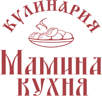
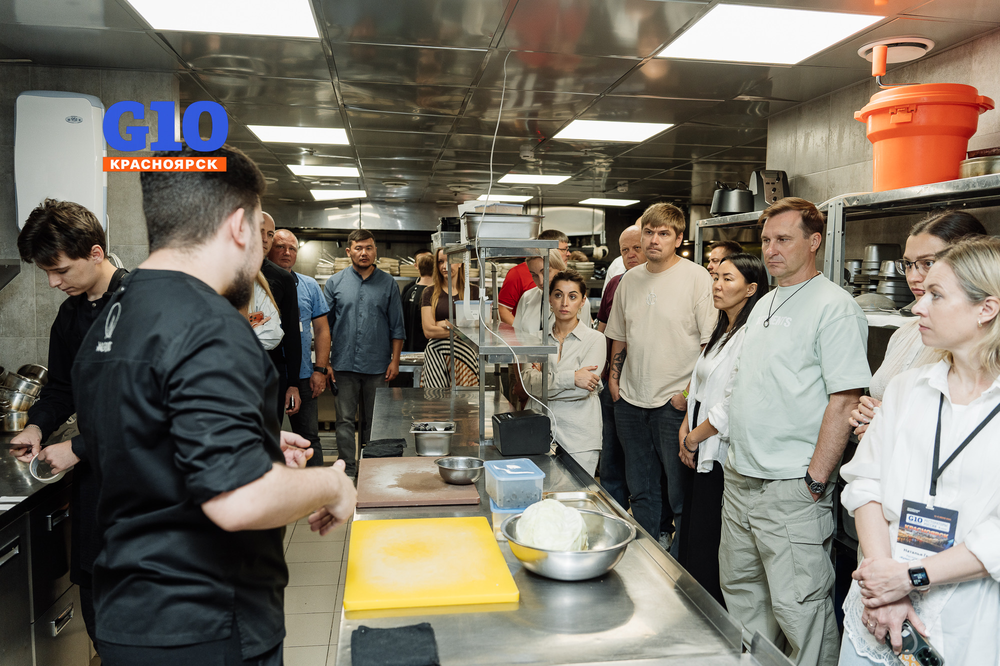
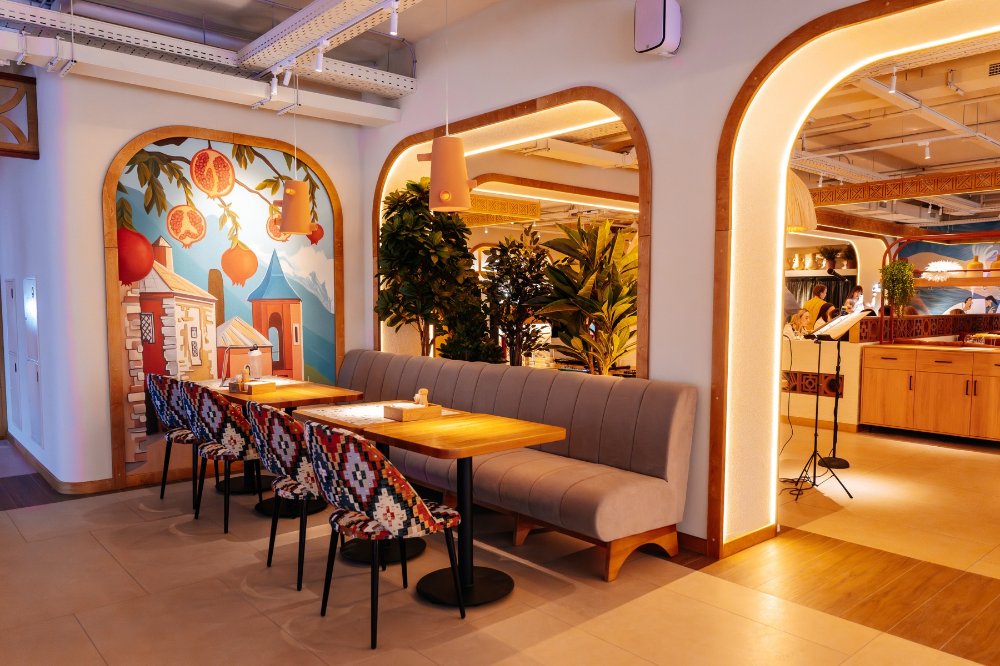
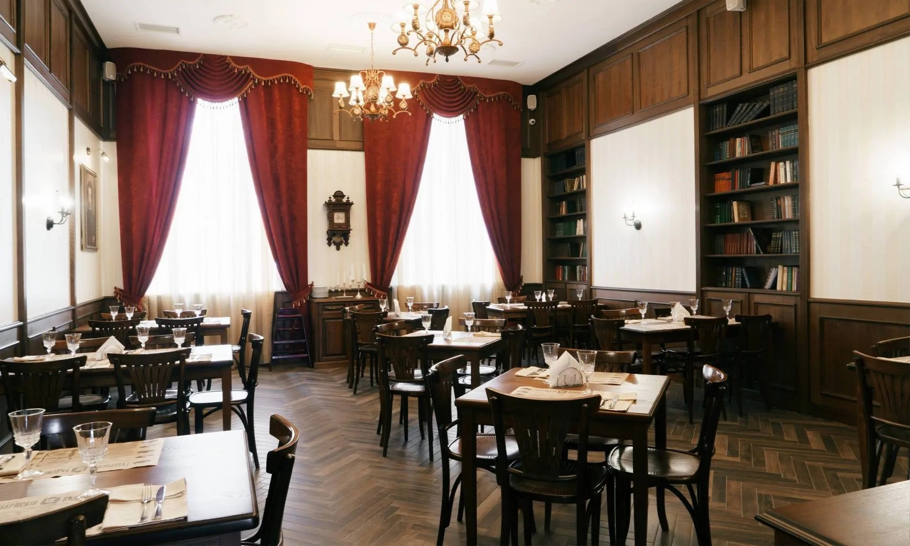
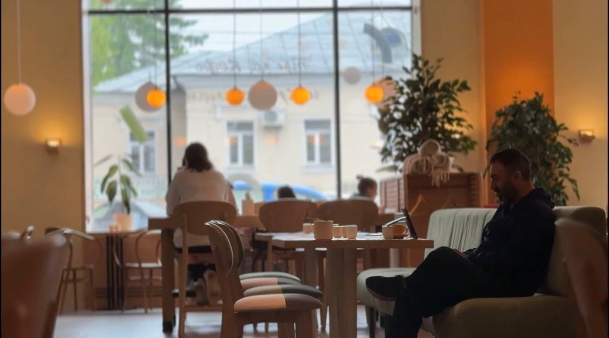
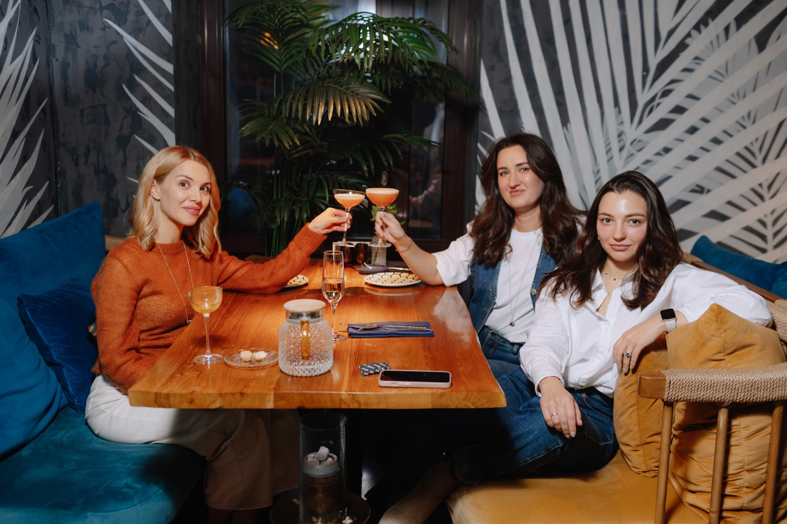
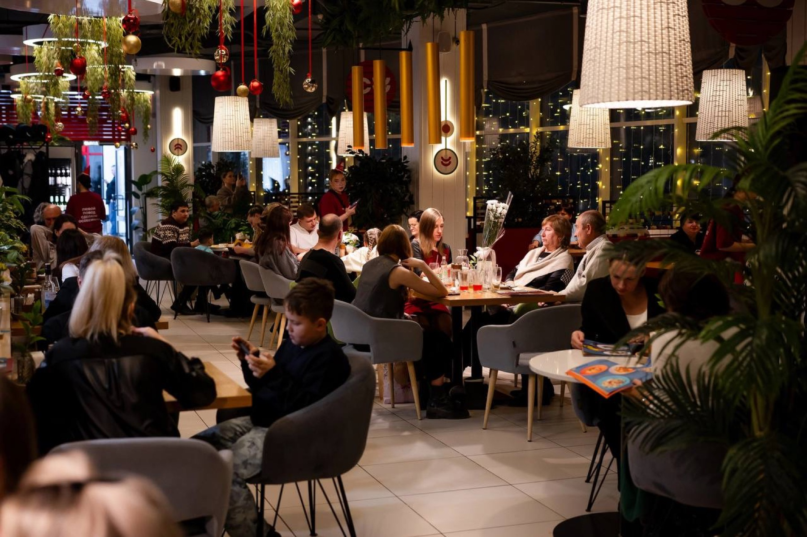
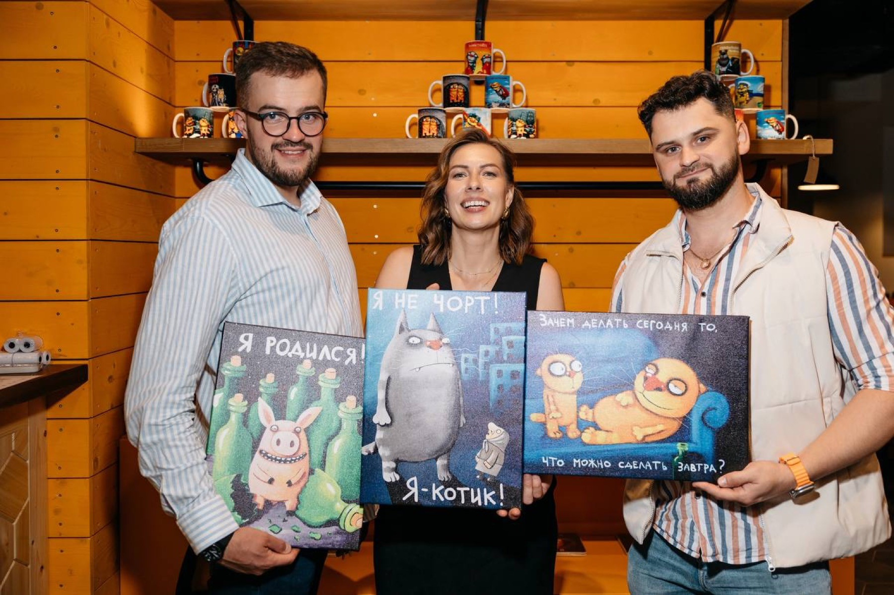
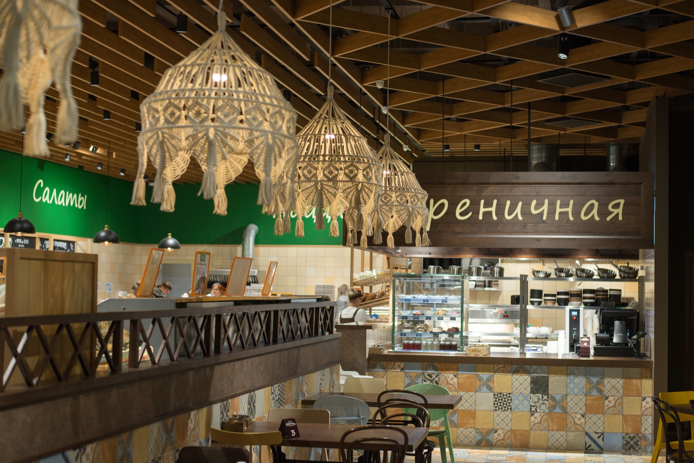
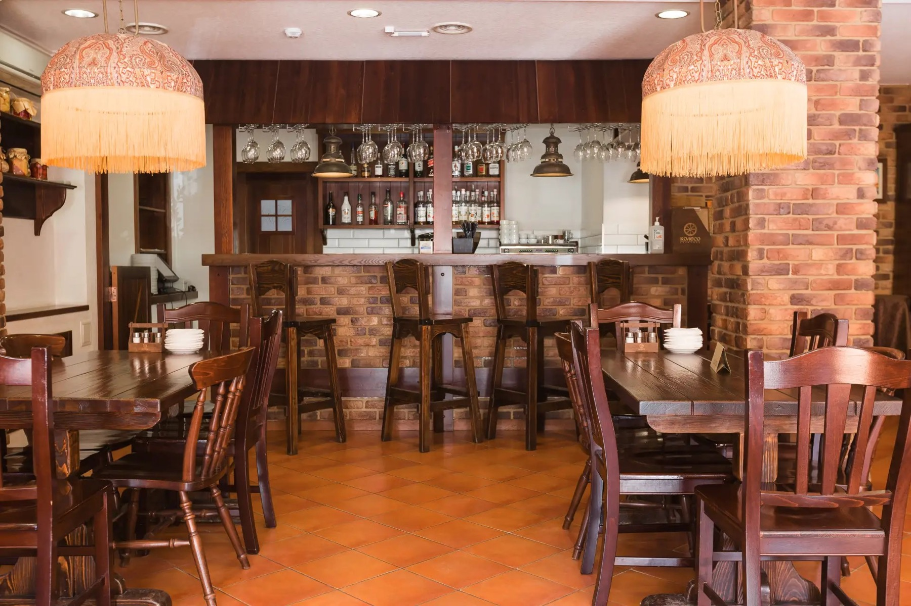

Культура Гостеприимства
Проекты Андрея Несветаева и Владимира Шаклеина


Партнёры программы
Культура Гостеприимства
Проекты Андрея Несветаева и Владимира Шаклеина

Мамина кухня
Проекты Михаила Скрябина
Культура Гостеприимства
В поисках лучших управленческих практик Информационная группа «Ресторанные ведомости» изучает ведущие ресторанные компании страны. Одним из самых ярких открытий стала кировская компания «Культура гостеприимства».
За 16 лет она прошла путь от регионального игрока до масштабной ресторанной группы, успешно развивающей проекты в пяти городах России.
В основе этого роста — сильная операционная система, цифровизация процессов, современные технологии управления и дисциплина исполнения. Именно такой подход позволил компании не только масштабироваться, но и сохранить устойчивость бизнеса в период серьёзных изменений на рынке HoReCa.
О проекте
Образовательный бизнес-проект «G10. Рестораторы России. Опыт лидеров» — это проект, в котором ведущие рестораторы страны делятся уникальным опытом ведения ресторанного бизнеса в своих городах.
3 дня полноценного погружения в операционную работу ведущих ресторанных компаний в составе закрытой группы.

Содержание программы
Насыщенная деловая программа с командами непосредственно на ресторанных площадках.
Круглые столы и дискуссионные панели с владельцами и топ-менеджерами.
Рестотуры по ведущим ресторанным проектам.
Аудит операционной деятельности.
Гастрономические дегустации лучших блюд.
Личное обучение и знакомство с ведущими рестораторами города и их командами.
Партнёры проекта

Проект альянса «Культура Гостеприимства»Ресторанный альянс · основатели Андрей Несветаев и Владимир Шаклеин

Ресторанная группа «Мамина кухня»Ресторанная группа · основатель Михаил Скрябин
Концепции

Кофейня
Городская кофейня с ежедневно обновляемым ассортиментом свежей выпечки: слойки — визитная карточка проекта. Широкое меню включает завтраки, салаты, супы и горячие блюда.

Восточный ресторан
«Восточный оазис» в центре Кирова: кулинарное путешествие по Марокко, Ливану, Турции, Израилю и Узбекистану с современными гастрономическими акцентами. Просторный зал и летняя веранда принимают до 132 гостей одновременно.
Грузинский ресторан
Эмоциональный грузинский ресторан с продуманной концепцией сервиса и уникальными ритуалами. Модель масштабируется через собственную франшизу.
Ресторан средиземноморской кухни
Элегантный ресторан с богатой винной картой и классическими европейскими позициями: свежими устрицами, пиццей с хрустящей корочкой, домашней пастой и авторскими коктейлями. Проект ориентирован на премиальный сегмент и гастрономические события.

Кафе
Сетевое кафе с понятным меню и проверенной временем бизнес-моделью. Оно рассчитано на повседневные встречи, семейные обеды и праздники.

Бар-музей
Уникальный бар-музей с концепцией абсурдного юмора и искусства, где гости становятся персонажами ложкинской вселенной. Франчайзинговый проект демонстрирует эффективность развлекательного формата в ресторанном бизнесе.

Мясной ресторан
Мясной ресторан в формате брискет-маркета с акцентом на приготовление на открытом огне.
Ресторация русской кухни
«Визитная карточка» города Киров — ресторация русской кухни в историческом особняке. Здесь проводят торжественные и деловые мероприятия любого формата в нескольких банкетных залах.

Трактир
Трактир с концепцией русской и европейской кухни. Пространство с летней верандой ориентировано на повседневный трафик и семейные обеды.
Программа
Покажем реальные кейсы автоматизации и ИИ-сервисов, которые уже экономят время и деньги в ресторанном бизнесе.
Закрытая группа
Спикеры
Основатель альянса «Культура Гостеприимства»
Основатель альянса «Культура Гостеприимства»
Основатель сети «Мамина кухня»
Ключевые темы проекта
Практика вместо теории
Стоимость участия
Доступна внутренняя рассрочка. Первый период выделен как текущий, последующие даты показаны для планирования.
Полное погружение в программу G10.
Общий контекст для собственника и команды.
Что входит в стоимость
Круглые столы и дискуссионные панели.
Погружение в ведущие ресторанные проекты.
Обеды, ужины и кофе-брейки в рамках программы.
Перемещение между локациями проекта.
Как проходят наши мероприятия
Отзывы участников
«Спасибо большое за ваш труд, организаторы, модераторы и спикеры! Невероятно интересно наблюдать за каждым, узнавать инструменты для роста компании и развития»
Римма Кантимирова Just Family
«Благодарю организаторов за насыщенную программу обучения. Очень информативно и полезно! Благодарю коллег за тот самый нетворкинг и атмосферу!»
Иван Пикулев Sangre Fresca
«Коллеги, всем спасибо за эти три прекрасных дня. Буду рада видеть в Нижнем Новгороде! До новых встреч!»
Марина Степанова TTBistro, BerёzkaGroup
«Спасибо организаторам и модераторам за 3 прекрасных образовательных дня! Удачи!»
Павел Азанов пекарня «Хлебница»
Регистрация открыта
Закрытая группа для владельцев бизнеса и операционных директоров.